Discover Iloilo!
1. Santa Barbara Parish Church
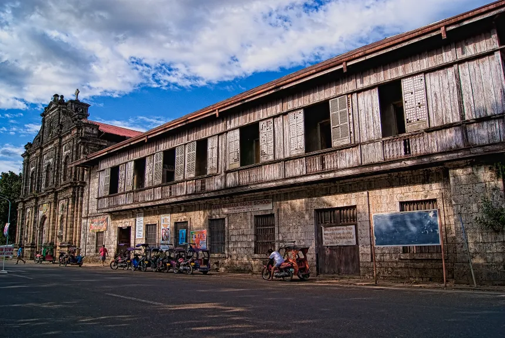The Santa Barbara Parish Church, established in 1760, is renowned for its neoclassical architecture and historical significance as the "Cradle of Independence" in the Visayas.
Santa Barbara Parish Church in Iloilo, Philippines, is known as the "Cradle of Independence" in the Visayas, having played a significant role during the Philippine Revolution. Established as an independent parish in 1760, its construction began in 1845 under Father Francisco Aguerria, funded by local taxes and labor. The church, a National Landmark since 1991, features neoclassical architecture and underwent restoration in 2015 to celebrate Philippine Independence Day.
2. Guimaras Island
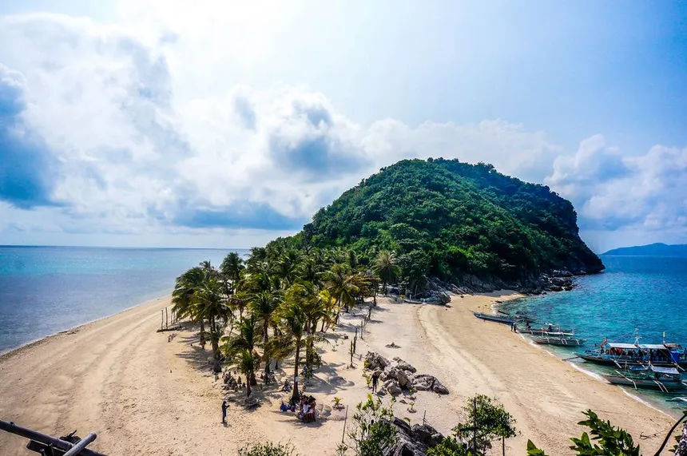Guimaras is an island province in the Philippines, located in the Western Visayas region, known as the "Mango Capital of the Philippines" due to its significant mango production. Covering an area of 604.57 square kilometers, it features a tropical climate with distinct dry and wet seasons, and its economy is primarily based on agriculture, fishing, and tourism. The province, which became independent from Iloilo in 1992, is popular for its beautiful beaches and the annual Manggahan Festival, celebrating its mango harvest.
3. Festive Walk Iloilo
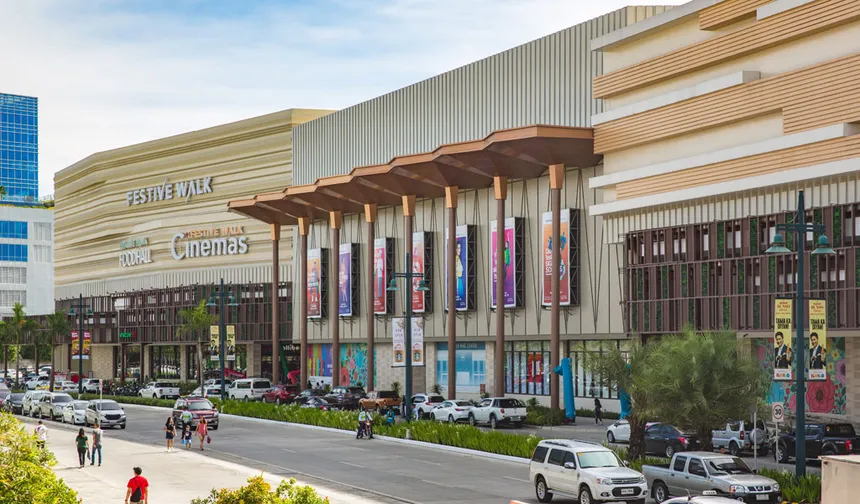Festive Walk Iloilo, also known as Festive Walk Mall, is a lifestyle mall developed by Megaworld Lifestyle Malls, located within the Iloilo Business Park in Mandurriao, Iloilo City. Launched in 2018, the three-level mall spans 90,000 square meters and is recognized as Megaworld's largest lifestyle mall outside Luzon, featuring a design that celebrates Ilonggo culture and the arts. The mall has won accolades, including a Highly Commended Award for 'Best Retail Architectural Design' at the 2018 Philippines Property Awards, and offers easy access to surrounding attractions via covered walkways.
4. Iloilo Museum of Contemporary Art (ILOMOCA)
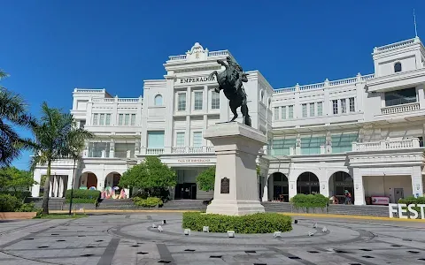The Iloilo Museum of Contemporary Art (ILOMOCA) is the first museum in the Visayas dedicated to modern and contemporary art, aiming to enrich community life in Iloilo through exhibitions and outreach programs. Located in the Casa Emperador Building within the Iloilo Business Park Township, the museum spans approximately 3,000 square meters, featuring five exhibition rooms, a theater facility, and a souvenir shop. Initiated by Megaworld Corporation through the Megaworld Foundation, ILOMOCA seeks to foster inclusive experiences and discussions about art and social life.
5. Iloilo River Esplanade
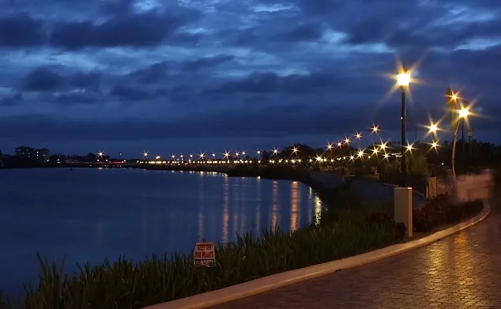The Iloilo River Esplanade is a 9.29-kilometer urban esplanade and linear park along the Iloilo River in Iloilo City, Philippines, stretching from Carpenter’s Bridge to Muelle Loney Bridge. Designed by renowned architect Paulo Alcazaren, it is part of the Iloilo River Rehabilitation Project and serves as a prime example of waterfront revitalization, featuring a peaceful promenade, mangrove forests, and eco-friendly spaces. Since its opening in 2012, the esplanade has become a popular attraction, inspiring similar public infrastructure projects across the country, and is managed by the Iloilo City Government for public enjoyment.
6. Molo Plaza
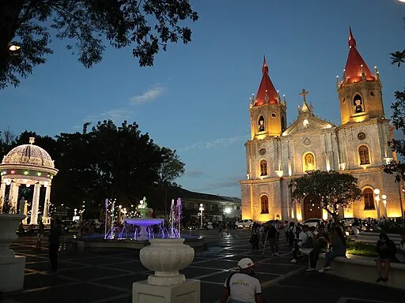Molo Plaza is an urban park and town square located in the Molo district of Iloilo City, Philippines, and is one of the city's six district plazas. Established in the 1920s, the plaza features statues of Greek goddesses and a monument of Maria Clara, and underwent significant rehabilitation in 2022, which included a PHP 20 million restoration and the installation of a new fountain. Surrounded by landmarks like Molo Mansion and St. Anne Parish Church, Molo Plaza has hosted various events, including celebrations for Iloilo City's 75th Charter Day.
7. Molo Mansion
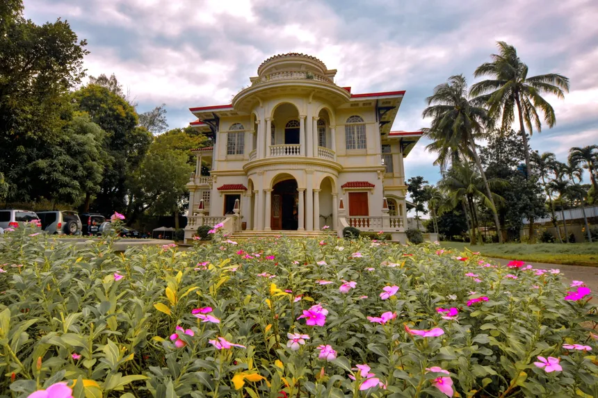Molo Mansion, also known as the Yusay-Consing Mansion, is a historic Neoclassical-Art Deco heritage house in Molo, Iloilo City, Philippines, built in 1926. Originally the Lacson-Yusay Ancestral House, it features high ceilings, ornate balustrades, and decorative carvings, making it a prominent landmark across from Molo Plaza and Molo Church. After undergoing restoration in 2014, the mansion now houses a Kultura store, allowing visitors to explore its rich history and cultural significance, reflecting the area's association with influential Filipino leaders and intellectuals.
8. Iloilo Provincial Capitol Casa Real
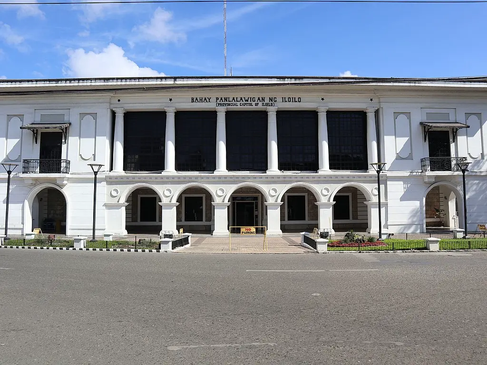The Casa Real de Iloilo, also known as the Old Iloilo Provincial Capitol, is a historical landmark in Iloilo City, Philippines, built in 1869 during the Spanish colonial era and serving as the provincial government seat until 2006. The structure originally featured a one-story stone design, with a second story added in 1873, and underwent a full restoration in 2015 to preserve its architectural integrity. Designated a National Historical Site and known as "Kilometer Zero" of Iloilo, the Casa Real now operates as a museum and tourist attraction, showcasing the city's rich history and cultural heritage.
9. Iloilo Convention Center (ICON)
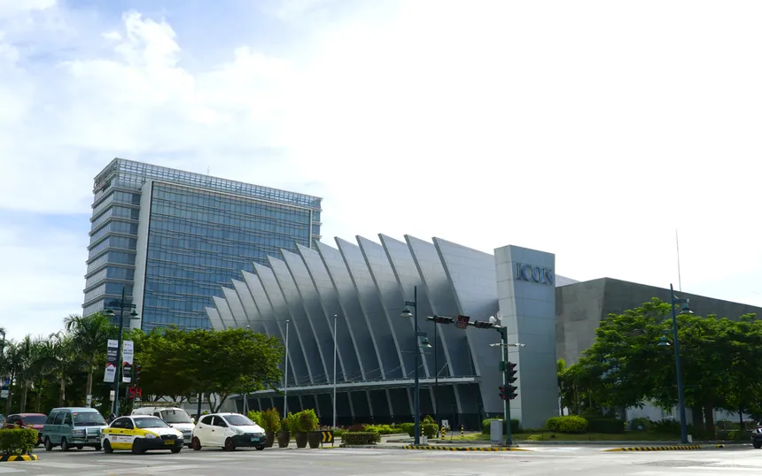The Iloilo Convention Center (ICON) is a modern convention facility located in Iloilo Business Park, completed in 2015 on the site of the former Mandurriao Airport. Designed by architect William Coscolluela, its structure reflects the vibrant Dinagyang and Paraw Regatta festivals, featuring a main hall that accommodates 3,700 seats and additional function rooms. Inaugurated by President Benigno Aquino III, the center serves as a significant venue for events, enhancing the cultural landscape of Iloilo City.
10. Iloilo International Airport
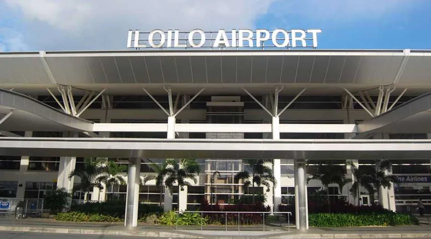Iloilo International Airport, located in Cabatuan, Iloilo, opened on June 14, 2007, replacing the older Mandurriao Airport. It is the first airport in Western Visayas built to international standards and serves as the primary gateway to the region, accommodating over 2.3 million passengers in 2023. The airport features a single 2,500-meter runway and modern facilities designed to meet contemporary air travel demands.
11. Museo Iloilo
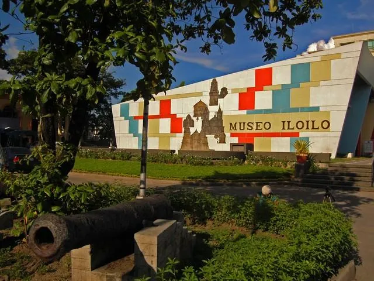Museo Iloilo, established in 1971 and designed by architect Sergio Penasales, is the first government-sponsored museum outside Metro Manila, located near the Iloilo Provincial Capitol. It showcases a diverse collection of Iloilo's cultural heritage, including artifacts from the Filipino-Spanish war, ancient pottery, and religious figures, reflecting the region's rich history and strong faith. Notable exhibits also include remnants from a British sunken ship and various war artifacts, highlighting the area's historical significance.
12. Old Iloilo Prison Building
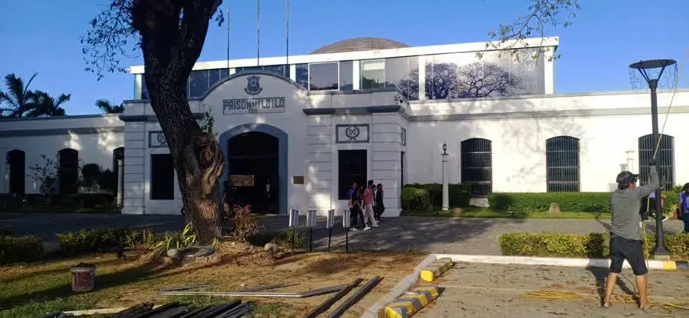The Old Iloilo Prison Building, constructed in 1911, served as a prison until 2006 when operations moved to a new facility in Pototan. In 2018, the building was repurposed as the Western Visayas Regional Museum after renovations funded by the local government and the National Museum. Recognized as a National Cultural Treasure, the museum now features five galleries that showcase the rich culture of Western Visayas, highlighting its architectural and historical significance.